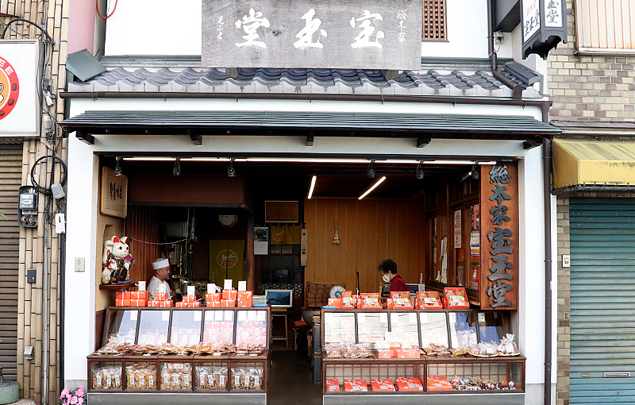
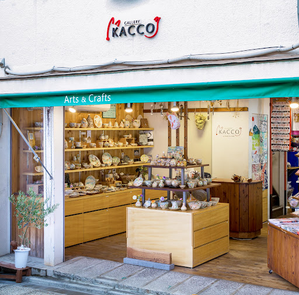
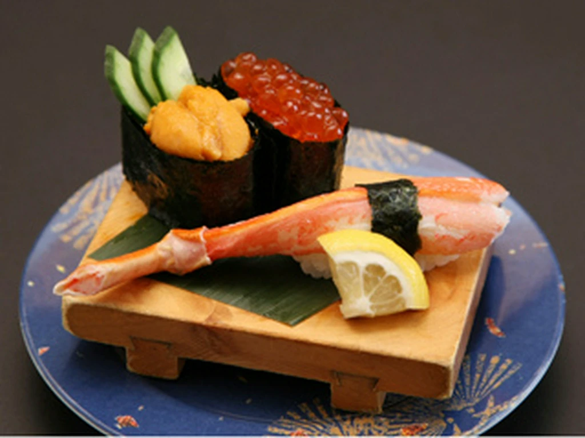
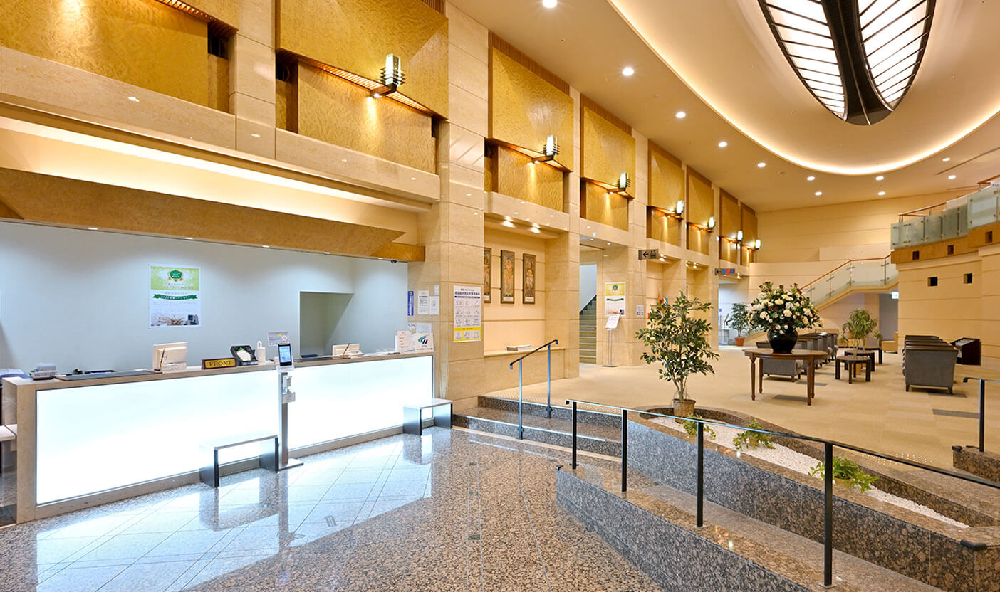
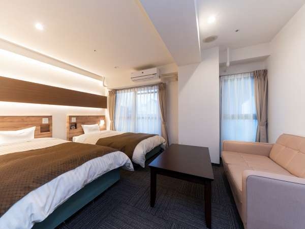
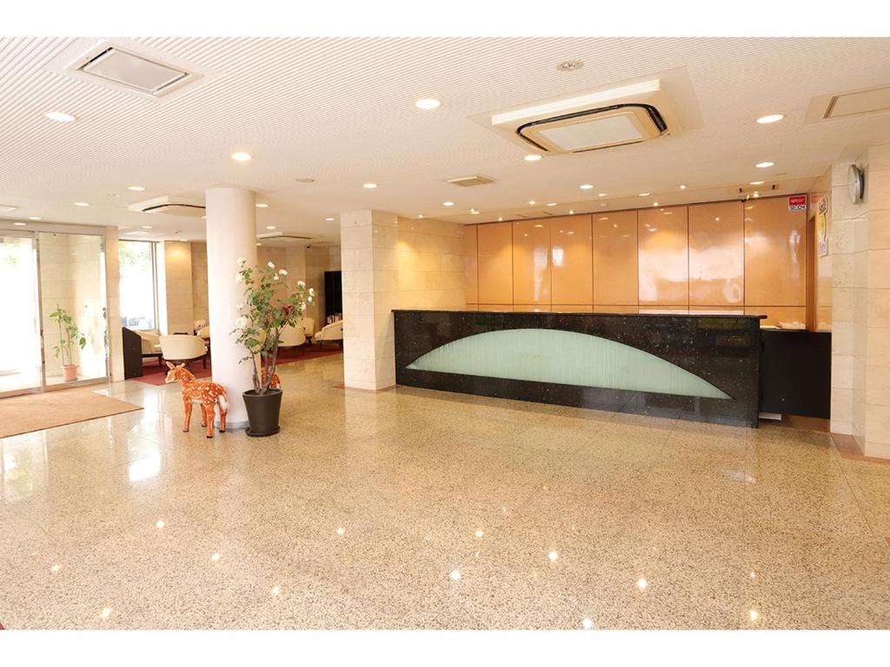
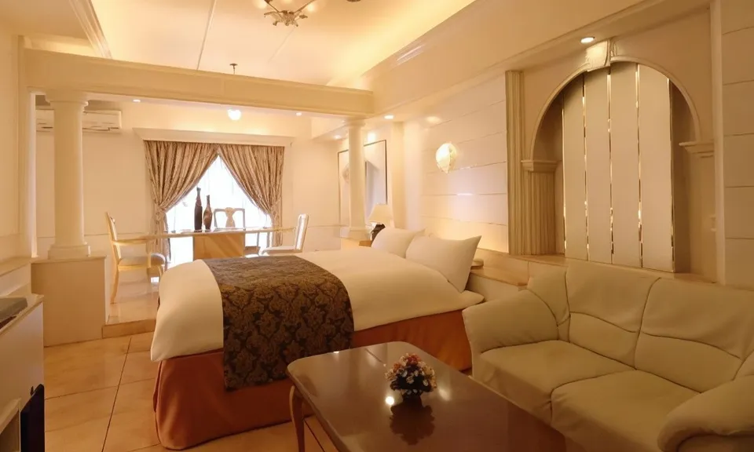

京都府
写真
{kind=link}
{kind=link}
{kind=link}
{kind=link}
{kind=link}
{kind=link}
{kind=link}
{kind=link}
地図
飲食店
観光スポット
ホテル
値段が時期により異なるので、比較サイトを見て５～６千円前後を予算に決めてください。
交通手段
選択肢1.所要時間30分 JR在来線 大阪駅～京都駅 580円
選択肢2.阪急（在来線）約43分（梅田駅～京都河原町駅）410円
お土産

総本家 宝玉堂
GALLERY KACCO和歌山県
和歌山の魅力
和歌山県は海・山・川の大自然に恵まれており、どの季節でも過ごしやすいです。
熊野古道やサイクリングを楽しむなら気候のいい春・秋がベスト。
海や川のアクティビティに挑戦するなら夏がオススメ。
写真
{kind=link}
{kind=link}
{kind=link}
{kind=link}
{kind=link}
{kind=link}
{kind=link}
{kind=link}
地図
飲食店

【所在地】
〒646-0026
和歌山県田辺市宝来町10-16
【営業時間】
ランチ 11：00～14：30（L.O.14：30）
ディナー 16：30～21：30（L.O.21：30）
※土・日・祝は11：00～21：30 通し営業
【定休日】
水曜日
【アクセス情報】
紀勢本線 田辺駅 徒歩7分
【所在地】
〒640-8323 和歌山県和歌山市太田２３−７ サンビル 1F
【営業時間】
水曜日 11時00分～14時30分,17時00分～23時00分
木曜日 11時00分～14時30分,17時00分～23時00分
金曜日 11時00分～14時30分,17時00分～0時00分
土曜日 11時00分～14時30分,17時00分～0時00分
日曜日 17時00分～0時00分
月曜日 11時00分～14時30分,17時00分～23時00分
【定休日】
火曜日
【アクセス情報】
JR和歌山駅より徒歩15分、喫茶店ぶらじりあん向い。
観光スポット
ホテル

和歌山アーバンホテル
アクセスが非常良く、心安らぐビジネスホテルです。
全室Wi-Fi完備で、観光の拠点として利用できます。
【所在地】
〒640-8341 和歌山県和歌山市黒田1丁目2番17号
【アクセス情報】
和歌山駅東口より徒歩2分

HOTEL CITY INN WAKAYAMA 和歌山駅前
和歌山駅から徒歩５分も場所にあり、
プランも安く評価もいいのでおすすめです。
【所在地】
〒640-8343 和歌山県和歌山市吉田４３２
【アクセス情報】
JR和歌山駅から徒歩5分
交通手段
高速バス 22:00発8:12着往復17600円
お土産
奈良県
奈良県の魅力
1300年の歴史を誇る古都・奈良 、
日本の国のはじまりを体感できる世界遺産に囲まれ、
国宝・重要文化財の建築・仏像が数多く残されている地です。
写真
{kind=link}
{kind=link}
{kind=link}
{kind=link}
{kind=link}
{kind=link}
{kind=link}
{kind=link}
地図
飲食店
【所在地】
〒630-8104 奈良県奈良市奈良阪町２６１１−５
【営業時間】
月曜日 11時00分～21時00分
火曜日 11時00分～21時00分
水曜日 11時00分～21時00分
木曜日 11時00分～21時00分
金曜日 11時00分～21時00分
土曜日 11時00分～21時00分
日曜日 11時00分～21時00分
【定休日】
なし
【アクセス情報】
JR関西本線（亀山-奈良）平城山駅東口 徒歩25分
【所在地】
〒630-8264 奈良県奈良市鍋屋町２−１ City Homes 奈良 201 女子大前
【営業時間】
月曜日 11時30分～15時00分
火曜日 11時30分～15時00分
水曜日 11時30分～15時00分, 17時00分～20時30分
金曜日 11時30分～15時00分
土曜日 11時30分～15時30分
日曜日 11時30分～15時30分, 17時00分～20時30分
【定休日】
木曜日
【アクセス情報】
近鉄奈良線 奈良駅 徒歩5分
JR奈良線 奈良駅 徒歩20分
観光スポット
ホテル

スマイルホテル奈良
アクセスも良く、綺麗なホテルです。
周りには観光名所が沢山あるので翌日の行先には困らないでしょう。
【所在地】
〒630-8122 奈良県奈良市三条本町４−２１
【アクセス情報】
JR「奈良駅」東口より徒歩約2分

ホテルファインガーデン奈良宝来店
格安と思えないほどの綺麗なホテルです。
アメニティをあり、満喫できると思います。
【所在地】
〒631-0845
奈良県奈良市宝来4-34-7
【アクセス情報】
尼ヶ辻駅より徒歩23分（1.8km）
交通手段
高速バス 22:00発8:12着往復17600円
お土産
滋賀県
滋賀の魅力
県の約６分の１を占める日本最大の湖・琵琶湖を抱え、水と緑の豊かな自然にふれ合うことができます。
古くから文化・経済の先進地として栄えたこの地には、歴史ある寺社や戦国時代をはじめとする英傑たちの足跡など、奥深い歴史文化があり、今もなお大切に守り伝えられています。
写真
{kind=link}
{kind=link}
{kind=link}
{kind=link}
{kind=link}
{kind=link}
{kind=link}
{kind=link}
地図
飲食店
【所在地】
〒520-2142 滋賀県大津市玉野浦１−１
【営業時間】
月曜日 11時00分～22時00分
火曜日 11時00分～22時00分
水曜日 11時00分～22時00分
木曜日 11時00分～22時00分
金曜日 11時00分～22時00分
土曜日 11時00分～22時00分
日曜日 11時00分～22時00分
【定休日】
なし
【アクセス情報】
石山駅から968m
観光スポット
ホテル
アクセスが非常良く、心安らぐビジネスホテルです。
全室Wi-Fi完備で、観光の拠点として利用できます。
【所在地】
〒522-0010 滋賀県彦根市駅東町２−１
【アクセス情報】
JR琵琶湖線快速彦根駅東口から徒歩3分
近江鉄道本線彦根駅東口から徒歩3分
料金が安いのに、綺麗なホテルです。
無料の朝食サービスがあり、すごくお得です。
【所在地】
〒520-3234 滋賀県湖南市中央２丁目９０
【アクセス情報】
草津線「甲西駅」から徒歩８分
栗東湖南インターチェンジから車で１３分
交通手段
高速バス 22:00発8:12着往復17600円